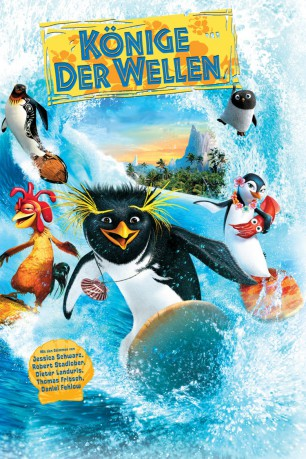

Auszeichnungen: für 1 Oscars nominiert
 gesehen am 11.09.2016
gesehen am 11.09.2016Alternativ: Surf's Up
Auszeichnungen: für 1 Oscars nominiert gesehen am 11.09.2016
 
 IMDB-Wertung: 6.8 / 10
IMDB-Wertung: 6.8 / 10  Metascore:
Metascore: 
Übrigens: Surfen wurde einst von den Pinguinen erfunden. Also kein Wunder, wenn die Vögel untereinander ihre eigenen Surf-Weltmeisterschaften abhalten. Grund genug für den Heißsporn Cody Maverick, von der Antarktis den nächstbesten Wal in Richtung Südsee zu nehmen, wo er dem scheinbar übermächtigen Konkurrenten Tank den Titel abnehmen will, nachdem sein Idol Big Z scheinbar beim letzten Wettbewerb ums Leben gekommen ist. Aber vor Ort muß Cody einsehen, daß dazu noch ein klein wenig mehr gehört, als Risikobereitschaft und er seine neuen Freunde Lani, die Rettungsschwimmerin und den durchgeknallten Chicken Joe, durchaus braucht...
Jahr: 2007
Dauer: 85 Minuten
FSK: 0
Land: USA Studio: Columbia PicturesTonspuren: DD5.1 - ,
Untertitel:
Auflösung: 1080p (1920x1024) Größe: 8130 MB
Genre: Komödie, Animation/Trick, Familie, Sport
Regisseur: Ash Brannon, Chris Buck
Drehbuch: Mark Frost
Soundtrack:
Darsteller:
 Shia LaBeouf als Cody Maverick
Shia LaBeouf als Cody Maverick Jeff Bridges als Zeke 'Big Z' Topanga / 'Geek'
Jeff Bridges als Zeke 'Big Z' Topanga / 'Geek' Zooey Deschanel als Lani Aliikai
Zooey Deschanel als Lani Aliikai Jon Heder als Chicken Joe
Jon Heder als Chicken Joe James Woods als Reggie Belafonte
James Woods als Reggie Belafonte Brian Posehn als Glen Maverick
Brian Posehn als Glen Maverick Maddie Taylor als Ivan / Glen's Buddy
Maddie Taylor als Ivan / Glen's Buddy Bob Bergen als
Bob Bergen als  John Cygan als
John Cygan als  Bill Farmer als
Bill Farmer als  Jess Harnell als
Jess Harnell als  Sherry Lynn als
Sherry Lynn als  Alec Medlock als
Alec Medlock als  Laraine Newman als
Laraine Newman als  Jan Rabson als
Jan Rabson als Datei: X:\Kinder Collections\Könige der Wellen\Könige der Wellen (2007, FSK0, 1920x1024).mkv seit 11.09.2016
Festplatte: Kinder-Filme+Trick
 Alle Filme aus Gruppe 'Kinder Collections\Könige der Wellen'
Alle Filme aus Gruppe 'Kinder Collections\Könige der Wellen'